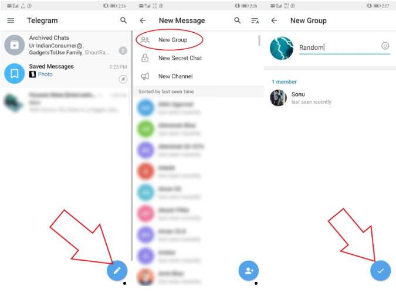
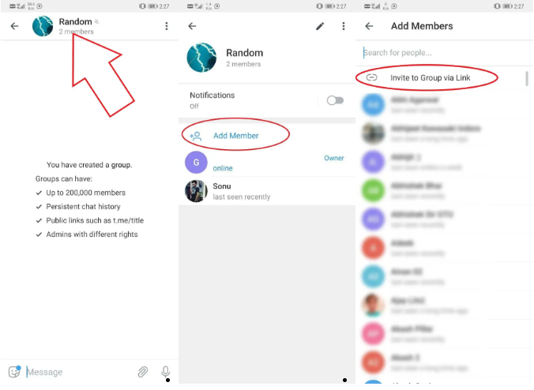
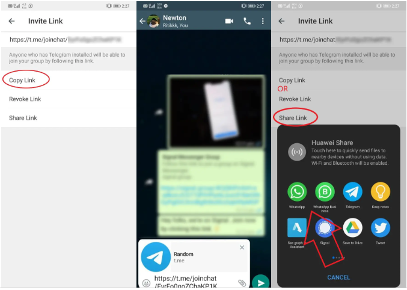

如何将 WhatsApp 群聊移至 Telegram
WhatsApp最近的隐私政策更新让用户开始寻找替代方案。除了 Signal Messenger 之外，Telegram 是最接近 WhatsApp 的替代品之一。现在，如果您从 WhatsApp 切换到 Telegram，您可能会发现很难继续使用旧的群聊。因此，在本文中，我们为您带来了如何将 WhatsApp 群聊转移到 Telegram Messenger 的快速解决方法。
将您的 WhatsApp 群聊移至 Telegram
不幸的是，Telegram 上没有直接导入 WhatsApp 群聊的选项。然而，这并非完全不可能。我们有一个解决方法，要求您在 Telegram 上创建一个新群组，获取邀请链接并使用该链接轻松高效地从 WhatsApp 群组中迁移人员
第 1 步 - 在 Telegram 上创建一个新群组

在手机上打开 Telegram。
单击右下角的钢笔图标。
在下一个屏幕上，单击“新建组”。
添加至少一名成员并继续。
第 2 步 - 获取群组邀请链接

打开群组对话并点击顶部的群组名称。
现在，点击添加成员。
在下一个屏幕上，单击“通过链接邀请加入群组” 以获取群组邀请链接。
第 3 步 - 将邀请链接分享到 WhatsApp 群组

复制 Telegram 中的群组邀请链接。
然后，打开 WhatsApp 并前往您的群组。
在这里，粘贴邀请链接。
您的 WhatsApp 群组中的成员现在可以通过单击您的链接快速加入 Telegram 群组。您还可以通过单击“共享”>“WhatsApp”>“您的群组名称”，直接将邀请链接发送到 WhatsApp 群组。
Telegram 群组限制
Telegram 允许一个群组中最多有 200,000 名成员，这与 WhatsApp 仅有 256 名成员的上限相比是疯狂的。此外，它还支持群聊中的回复、提及和主题标签。
与 WhatsApp 一样，您可以在 Telegram 上进行语音和视频通话，甚至可以在群聊中进行。不过，群组视频通话目前正处于测试阶段，尚未推出。